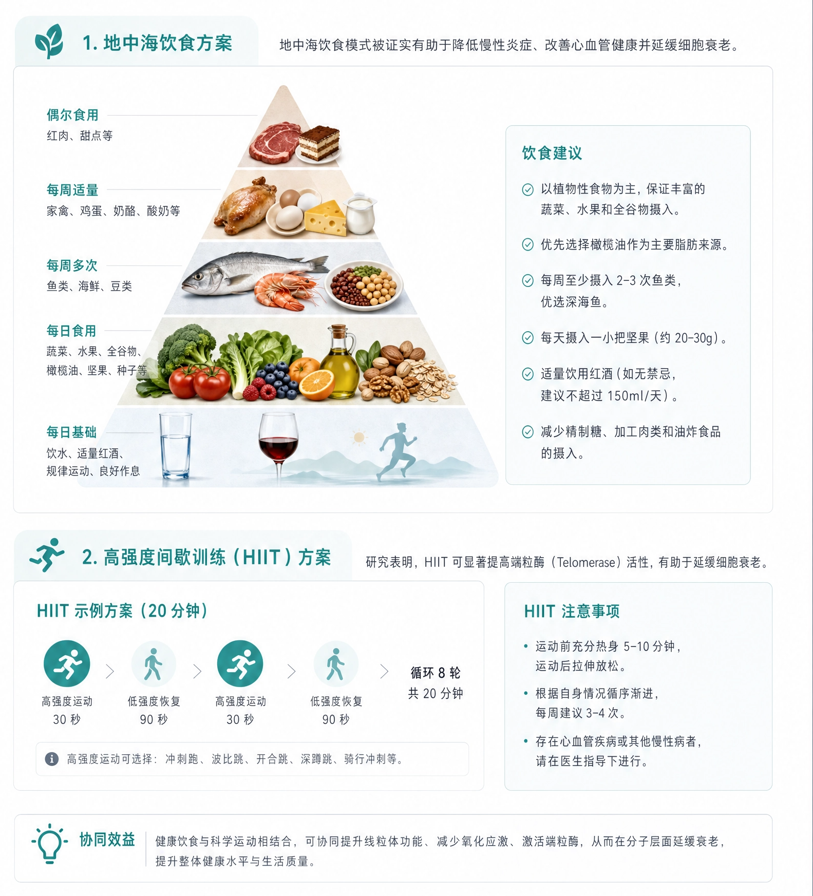

芽
1. 地中海饮食方案
地中海饮食模式被证实有助于降低慢性炎症、改善心血管健康并延缓细胞衰老。
偶尔食用红肉、甜点等
每周适量家禽、鸡蛋、奶酪、酸奶等
每周多次鱼类、海鲜、豆类
每日食用蔬菜、水果、全谷物、橄榄油、坚果、种子等
每日基础饮水、适量红酒、规律运动、良好作息

跑
2. 高强度间歇训练（HIIT）方案
研究表明，HIIT 可显著提高端粒酶（Telomerase）活性，有助于延缓细胞衰老。
HIIT 示例方案（20 分钟）
跑高强度运动
30 秒
›
走低强度恢复
90 秒
›
跑高强度运动
30 秒
›
走低强度恢复
90 秒
›
循环 8 轮
共 20 分钟
高强度运动可选择：冲刺跑、波比跳、开合跳、深蹲跳、骑行冲刺等。
HIIT 注意事项
- 运动前充分热身 5-10 分钟，运动后拉伸放松。
- 根据自身情况循序渐进，每周建议 3-4 次。
- 存在心血管疾病或其他慢性病者，请在医生指导下进行。
灯
协同效益 健康饮食与科学运动相结合，可协同提升线粒体功能、减少氧化应激、激活端粒酶，从而在分子层面延缓衰老，提升整体健康水平与生活质量。
温馨提示：本方案基于您的检测结果及当前健康状况制定，仅供参考，不能替代专业医疗建议。